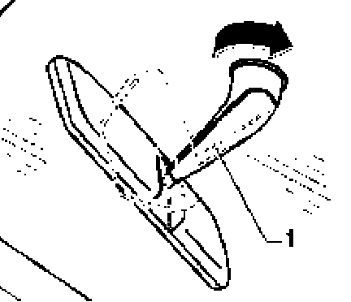

Interior Rear View Mirror
Interior rear view mirror,
removing

- Press interior rear view mirror -1 - downward at an angle off retaining plate (spring clip in mirror base).
Interior rear view mirror, installing

- When installing, place mirror-i- in position, turned 60L 90L to mounted position and turn until locking spring clicks into place.